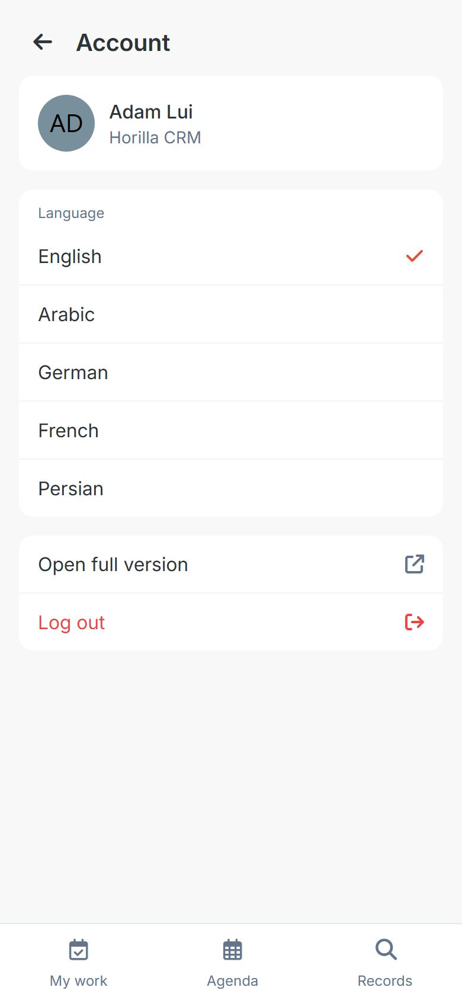
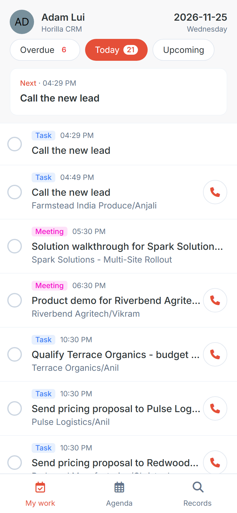
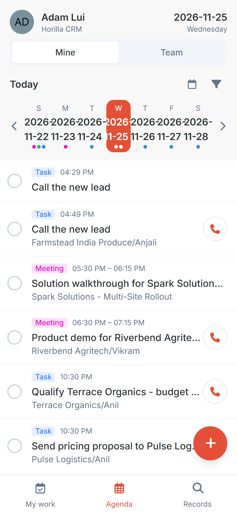
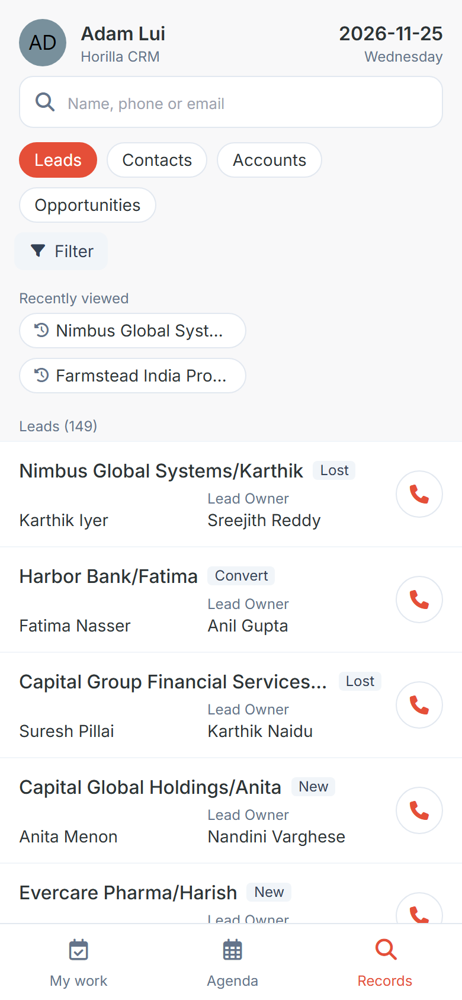

Overview
Open /m/ on the same site and sign in with the same account. The bottom bar has
three items: My work, Agenda and Records.
Account, language, a link back to the full version, and log out are on the account page.

My work
My work is today's list. Later dates link through to the Agenda.

Agenda
The Agenda is a day view. Switch between Mine and Team, jump to a date, and limit the team members that are shown. Nobody ticked shows the whole team. The types listed here are the same types the full calendar shows. Adding an activity from the Agenda stays on this tab.

Records
Records finds a CRM record the phone layout has opted in. From a record you can edit details, log an activity, and add a note. Edit details saves the fields the phone form can change. A change the phone form cannot finish offers a link to the full version.
